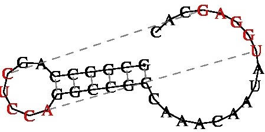

RNA Analysis
Structural RNAs:
A. Ribosomal RNA analysis
- StructRNAfinder predicts and annotates RNA families in transcript or genome sequences. This single tool not only displays the sequence/structural consensus alignments for each RNA family, according to Rfam database but also provides a taxonomic overview for each assigned functional RNA.
(Reference: Arias-Carrasco R et al. (2018) 19: 55). - Silva rRNA database project (Max Planck Institute for Marine Microbiology, Bremen, Germany ) - provides comprehensive, quality checked and regularly updated datasets of aligned small (16S/18S, SSU) and large subunit (23S/28S, LSU) ribosomal RNA (rRNA) sequences for all three domains of life (Bacteria, Archaea and Eukarya).
B. Transfer RNAs (tRNA)
For additional information see the Genomic tRNA Database GtRNAdb (Reference: Chan PP & Lowe TM (2016) Nucleic Acids Res; 44(D1): D184-189), or tRNADB-CE (tRNA Gene DataBase Curated by Experts) (Reference: Abe T et al. (2014) Front Genetics 5: 114).
- tRNAs: tRNAscan-SE (Univerisity of California, Santa Cruz, U.S.A.) - is incredibly sensitive & also provides secondary structure diagrams of the tRNA molecules
(Reference: Lowe, TM, & Eddy, SR. Nucleic Acids Res. 1997. 25: 955-964). tRNAscan-SE 2.0 can also be accessed here. Alternatively, use ARAGORN
(Reference: Laslett, D. & Canback. 2004. Nucleic Acids Research 32:11-16),
or tRNAfinder
(Reference: Kinouchi M & Kurokawa K (2006) J Computer Aided Chem 7: 116-126). - Rfam - The Rfam database is a collection of RNA families, each represented by multiple sequence alignments, consensus secondary structures and covariance models
(Reference: Gardner, P.P. et al. 2008. Nucl. Acids Res. 37, Database issue D136-D140)
C. Micro RNAs
(miRNAs) are small, non-coding RNA (~20-22 nucleotides) that negatively regulate gene expression at post-transcriptional level. You might want to start with miRGator3. (Reference: Cho S et al. (2013) Nucleic Acids Res 41(Database issue): D252-257).
-
mirTools 2.0 -is an updated version of mirTools 1.0, which includes the following new features. (1) From miRNA discovery in mirTools 1.0, mirTools 2.0 allows users to detect and profile various types of ncRNAs, such as miRNA, tRNA, snRNA, snoRNA, rRNA, and piRNA. (2) From miRNA profiling in mirTools 1.0, mirTools 2.0 allows users to identify miRNA-targeted genes and performs detailed functional annotation of miRNA targets, including Gene Ontology, KEGG pathway and protein-protein interaction. (3) From comparison of two samples for differentially expressed miRNAs in mirTools 1.0, mirTools 2.0 allows users to detect differentially expressed ncRNAs between two experimental groups or among multiple samples. (4) Other significant improvements include strategies used to detect novel miRNAs and piRNAs, more taxonomy categories to discover more known miRNAs and a stand-alone version of mirTools 2.0.
(Reference: Wu Jet al. (2013) RNA Biol; 10(7): 1087-1092). -
miRDB - employs an improved algorithm for miRNA target prediction, we now present updated transcriptome-wide target prediction data in miRDB, including 3.5 million predicted targets regulated by 7000 miRNAs in five species. Further, we have implemented the new prediction algorithm into a web server, allowing custom target prediction with user-provided sequences. Another new database feature is the prediction of cell-specific miRNA targets. miRDB now hosts the expression profiles of over 1000 cell lines and presents target prediction data that are tailored for specific cell models.
(Reference: Chen Y & Wang X (2020) Nucleic Acids Res 48(D1): D127-D131). -
MirGeneDB 3.0 is a database of manually curated microRNA genes that have been validated and annotated. MirGeneDB 3.0 includes more than 21,000 microRNA gene entries representing more than 1,700 microRNA families from 114 metazoan species. All microRNAs can be browsed, searched and downloaded
(Reference: Clarke AW et al. (2025) Nucleic Acids Res 53(D1): D116-D128). -
miRNAFold - is a web server for fast miRNA precursor prediction in genomes that allows predicting miRNA hairpin structures quickly with high sensitivity.
(Reference: Tav C et al (2016). Nucleic Acids Research 44(W1): W181–W184) -
miRViz - is a webserver application designed to visualize and interpret large miRNA datasets, with no need for programming skills. MiRViz has two main goals: (i) to help biologists to raise data-driven hypotheses and (ii) to share miRNA datasets in a straightforward way through publishable quality data representation, with emphasis on relevant groups of miRNAs. MiRViz can currently handle datasets from 11 eukaryotic species
(Reference: Giroux C et al. (2020) Nucleic Acids Res 48(W1): W252-W261). -
miR-BAG predict miRNAs from the genomic sequences as well as from Next Generation Sequencing data. It applies a bootstrap aggregating approach to create an ensemble of three different approaches (naïve Bayes, Best First Decision tree and SVM) to achieve a high accuracy. At present miR-BAG includes 6 different species, 4 for animals (Homo sapiens, Canis familiaris, Mus musculus, Rattus norvegicus) alongwith one nematode (Caenorhabditis elegans) and one insect species (Drosophila melanogaster). miR-BAG was found to perform consistently with accuracy level higher than 90% for several species.
(Reference: Jha, A. et al. 2012. PLoS ONE 7(9): e45782.) -
Small nucleolar RNAs (snoRNAs) - can be detected with Snoscan for methylation-guide for snoRNAs and snoGPS for pseudouridylation-guide snoRNAs
(Reference: P. Schattner et al. 2005. Nucl. Acids Res. 33: W686-W689). Test sequences. -
sRNAtoolbox - is an integrated collection of small RNA research tools. Includes: sRNAbench: Expression profiling of small RNAs and prediction of novel microRNAs from deep sequencing data; sRNAde: Differential expression analysis; sRNAblast: Blast analysis of deep sequencing reads against a local nt/nr (NCBI link) database.
(Reference: A. Rueda et al. 2015. Nucl. Acids Res. 43 (W1): W467-W473).
RNA folding:
-
RNAstructure (webservers for RNA secondary structure prediction) is a software package that includes structure prediction by free energy minimization, prediction of base pairing probabilities, prediction of structures composed of highly probably base pairs, and prediction of structures with pseudoknots.
(Reference: Xu ZZ & Mathews DH (2016) Methods Mol Biol; 1490: 15-34). - Vfold Pipeline - offers a new user-friendly approach to the fully automated prediction of RNA 3D structures with given sequences. It first predicts 2D structures using the Vfold2D model and then predicts 3D structures based on the predicted 2D structures using the Vfold3D and VfoldLA models.
(Reference: Xu, XJ., Chen, S.-J. (2016) Methods Mol Biol. 1490: 63-72). - LocARNA - Multiple Alignment of RNAs - is a tool for multiple alignment of RNA molecules. LocARNA requires only RNA sequences as input and will simultaneously fold and align the input sequences. LocARNA outputs a multiple alignment together with a consensus structure. For the folding it makes use of a very realistic energy model for RNAs as it is by RNAfold of the Vienna RNA package (or Zuker's mfold). For the alignment it features RIBOSUM-like similarity scoring and realistic gap cost.
(Reference: C. Smith et al. 2010. Nucl. Acids Res. 38: W373-377). - CARNA is a tool for multiple alignment of RNA molecules. CARNA requires only the RNA sequences as input and will compute base pair probability matrices and align the sequences based on their full ensembles of structures. Alternatively, you can also provide base pair probability matrices (dot plots in .ps format) or fixed structures (as annotation in the FASTA alignment) for your sequences. If you provide fixed structures, only those structures and not the entire ensemble of possible structures is aligned. In contrast to LocARNA, CARNA does not pick the most likely consensus structure, but computes the alignment that fits best to all likely structures simultaneously. Hence, CARNA is particularly useful when aligning RNAs like riboswitches, which have more than one stable structure.
(Reference: A. Dragos et al. 2012. Nucleic Acids Reseach 40: W49-W53). - Foldalign - folds and aligns RNA structures (make a foldalignment) based on a lightweight energy model and sequence similarity. The current version makes pairwise fold alignments.
(Reference: J. H. Havgaard et al. (2007) J. PLOS computational biology. 3: e193). - For RNA folding use MFold - N.B. The data can be presented in a number of graphic formats. This is my "go to" site if I'm interested in a secondardy structure for a fragment of RNA or DNA
(Reference: M. Zuker. 2003. Nucleic Acids Res. 31: 3406-3415). - Vienna RNA secondary structure prediction (University of Vienna, Austria). I have found this site useful for drawing tRNAs in cloverleaf format.
- CONTRAfold is a novel secondary structure prediction method based on conditional log-linear models, a flexible class of probabilistic models which generalize upon stochastic context-free grammars by using discriminative training and feature-rich scoring. By incorporating most of the features found in typical thermodynamic models, CONTRAfold achieves the highest single sequence prediction accuracies to date, outperforming currently available probabilistic and physics-based techniques. It provides MARNA-like output couples with hairpin structures
(Reference: Do, C.B. et al. 2006. Bioinformatics 22: e90-e98). - Web-Beagle - a web server for the pairwise global or local alignment of RNA secondary structures.
(Reference: E. Mattei et al. 2015. Nucl. Acids Res. 43 (W1): W493-W497). - Rclick this web server that is capable of superimposing RNA 3D structures by using clique matching and 3D least-squares fitting. Rclick has been benchmarked and compared with other popular servers and methods for RNA structural alignments. In most cases, Rclick alignments were better in terms of structure overlap. It also recognizes conformational changes between structures.
(Reference: Nguyen MN, & Verma C. 2015. Bioinformatics 31:966-968).

Pseudoknots:
- pKiss - is the successor of pknotsRG, the first pseudoknot class is the canonical simple recursive pseudoknot from pknotsRG. The new class are canonical simple recursive kissing hairpins.
(Reference: Janssen, S. & Giegerich, R. Bioinformatics, 2015; 31(3):423-5). - ProbKnot server takes a sequence file of nucleic acids, either DNA or RNA, and predicts the presence of pseudoknots in its folded configuration. Note that increasing the number of calculation iterations may be helpful in increasing accuracy. Note also that if a pseudoknot-containing structure is predicted, it will be displayed as a circular structure. If the predicted structure does not contain pseudoknots, it will be displayed as a radial structure
(Reference: Bellaousov S, Mathews DH (2010) RNA. 16(10): 1870-1880). - CyloFold (part of RNA Structure and Design Tools) - is a program for predicting the secondary structure of an RNA sequence including pseudoknots. For sequences greater 100 nucleotides, it is recommended to save the provided job ID, in order to be able to access the status of the job submission. Once the computation is finished, the predicted secondary structure is displayed in two different formats ("bracket-notation" as well as "CT-format") or here.
(Reference: Bindewald E, Kluth T, Shapiro BA (2010) Nucleic Acids Res. 38(Web Server issue): W368-372) - vsfold5 - RNA Pseudoknot Prediction Server (requires registration)
GCGGCCAGCUCCAGGCCGCCAAACAAUAUGGAGCAC ((((((..[[[[[)))))).........]]]]]... - KineFold Web Server - RNA/DNA folding predictions including pseudoknots and entangled helices
(Reference: A. Xayaphoummine et al. (2005) Nucleic Acid Res. 33: 605-610). - IPknot: IP-based prediction of RNA pseudoKNOTs - rovides services for predicting RNA secondary structures including a wide class of pseudoknots. IPknot can also predict the consensus secondary structure when a multiple alignment of RNA sequences is given.
(Reference: K. Sato et al. (2011) Bioinformatics, 27: i85-i93). - ProbKnot - this server takes a sequence file of nucleic acids, either DNA or RNA, and predicts the presence of pseudoknots in its folded configuration. Note that increasing the number of calculation iterations may be helpful in increasing accuracy. Note also that if a pseudoknot-containing structure is predicted, it will be displayed as a circular structure. If the predicted structure does not contain pseudoknots, it will be displayed as a radial structure.
(Reference: Bellaousov S, Mathews DH (2010) RNA. 16(10): 1870-1880). - RNAstructure - Predict a Secondary Structure Web Server - combines many separate prediction and analysis algorithms: calculating a partition function, predicting a maximum free energy (MFE)structure, finding structures with maximum expected accuracy, and pseudoknot prediction. This servertakes a sequence, either RNA or DNA, and creates ahighly probable, probability annotated group of secondary structures, starting with the lowest free energy structure and including others with varied probabilities of correctness.
- K2N: a service to get from knotted to nested RNA structures. This site provides access to a variety of methods for pseudoknot removal.
(Reference: S. Smit et al. (2008) RNA 14(3):410-416).
Promoters, terminators and other regulatory elements:
- Virtual Footprint - offers two types of analyses (a) Regulon Analysis - analysis of a whole prokaryotic genome with one regulator pattern and (b) Promoter analysis Analysis of a promoter region with several regulator patterns
(Reference: R. Münch et al. 2005. Bioinformatics 21: 4187-4189). - ARNold finds rho-independent terminators in nucleic acid sequences using two complementary programs, Erpin and RNAmotif. The program colors the terminator stem and loop
(Reference: Gautheret D, Lambert A. 2001. J Mol Biol. 313:1003–11 & Macke T. et al.2001.Nucleic Acids Res. 29:4724–4735). - Riboswitches are structured noncoding RNA domains used by many bacteria to monitor the concentrations of target ligands and regulate gene expression accordingly (See: Discovering riboswitches: the past and the future and Parallel Discovery Strategies Provide a Basis for Riboswitch Ligand Design). They can be discovered using Riboswitch Finder
(Reference: Bengert P, & Dandekar T. (2004) Nucleic Acids Res. 32(Web Server issue): W154-W159)
or RNAProbe
(Reference: Wirecki TK et al. (2020) Nucleic Acids Res. 48(Issue W1): W292–W299).
SiRNA:
- ARTS (Alignment of RNA Tertiary Structures) - aligns two nucleic acid structures (RNAs or DNAs) in pdb format and detecting apriori unknown common substructures. The identified common substructures can be either large global folds or small local tertiary motifs with at least two successive base pairs.
(Reference: O. Dror et al. 2005. Bioinformatics 21 (Suppl 2):ii47-ii53) - CopraRNA is a tool for sRNA target prediction. It computes whole genome predictions by combination of distinct whole genome IntaRNA predictions
(Reference: P.R. Wright et al. 2014. Nucl. Acids Res. 42 (W1), W119-W123). - OligoWalk - calculates thermodynamic features of sense-antisense hybidization. It predicts the free energy changes of oligonucleotides binding to a target RNA. It can be used to design efficient siRNA targeting a given mRNA sequence.
(Reference: Lu, Z.J. & Mathews, D.H. 2008. Nucleic Acids Res.36: 640-647).
CRISPR:
- CRISPR sgRNA Design Tool - GenScript is proud to offer free online access to our gRNA sequence design tool, developed by the Broad Institute of Harvard and MIT. Our gRNA design tool will identify single guide RNAs for use with wild-type S. pyogenes Cas9 for any DNA sequence you input. Start your gRNA design project by entering a sequence up to 250bp in length below.
- CRISPRdirect - is a simple and functional web server for selecting rational CRISPR/Cas targets from an input sequence.
(Reference: Naito Y et al. (2015)Bioinformatics 31: 1120-1123). - The Center for Non-coding RNA in Technology and Health (RTH, Denmark) has developed CRISPRon - a CRISPR-Cas9 guide efficiency prediction server; WebCircRNA - assesses the circular RNA potential of coding and noncoding RNA; CRISPRoff - off-targeting assessment of Cas9 gRNAs plus a number of other sites for ncRNA detection and analysis.
META SITE:
- Rtools (Computational Biology Research Consortium , Japan) - is a bioinformatics web Server for RNA (single FASTA format, <= 400nt) - In order to visualize the whole picture of the distribution of the secondary structure, this web-server provides users with rich information of single RNA sequences using 7 tools: (a) CentroidFold based on a generalized centroid estimator is one of the most accurate tools for predicting RNA secondary structures. (b) CentroidHomfold predicts RNA secondary structures by employing automatically collected homologous sequences of the target. (c) IPknot predicts RNA secondary structures including a wide class of pseudoknots. (d) Rchange computes entropy and internal energy changes of secondary structures for single-point mutated sequences. (e) CapR calculates probabilities that each RNA base position is located within each secondary structural context for long RNA sequences. (f) Raccess computes the accessibility of segment [a, b] = [x, x+l-1] in the transcript for all the positions x with fixed length l (Acc.len) = 5, 10, 20. (g) RintD validates RNA secondary structures. Target secondary structures are predicted by CentroidFold (inference engine: McCaskill) and RNAfold (Minimum free energy structure).
Updated: November, 2025